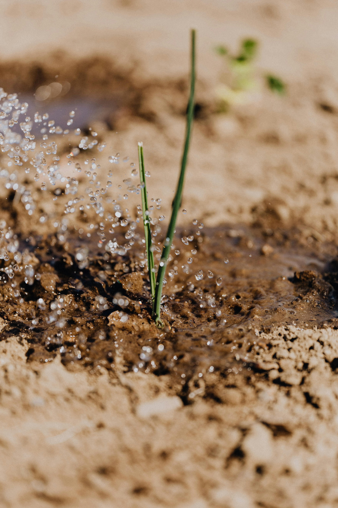

Agricultural
Information.Hub
Welcome to Sidcup Family Golf!
The Agricultural Information Hub is a centralized platform that
provides farmers
and stakeholders with timely, accurate information to support
sustainable and efficient agricultural practices.
Farmaing Guides
Crop Details
Pest Control
Farmaing Guides
Crop Details
Pest Control
.jpg)
Farmaing Guides
Farming Guides are detailed resources designed to help farmers
understand and apply effective
agricultural practices They cover every stage of farming — from
land preparation, seed selection,
and planting methods to irrigation,pest and disease control,
fertilization, and harvesting.
These guides aim to improve crop yields, ensure sustainable use of
resources, and support farmers
in making informed decisions based on climate, soil type, and
market demand.
.jpg)


crop care & Pest Management
1. crop care :
Crop care refers to the regular practices that ensure the healthy growth of crops. This includes proper irrigation, timely fertilization, weeding, pruning, and monitoring plant health. Well- maintained crops are more resistant to diseases and give better yields.
2. Pest Problems in Farming :
Pests like insects, worms, fungi, and bacteria can damage different parts of a plant—leaves, stems, roots, or fruits. If not controlled, pests can lead to severe crop loss and affect both quality and quantity.
3. Integrated Pest Management (IPM) :
IPM is a sustainable approach that combines biological, cultural, mechanical, and chemical tools to manage pests. It minimizes harm to the environment and human health while keeping pests under control.
Pest Control & Management

Pest Control refers to the methods used to protect crops from harmful organisms like insects, worms, fungi, and bacteria. These pests can damage different parts of the plant—such as leaves, stems, roots, or fruits—reducing both quality and yield.
🔍 Key Aspects:
1. Monitoring & Early Detection :
Regularly inspecting fields to identify pest problems early before they spread.
2. Cultural Methods :
Using good farming practices like crop rotation, intercropping, and proper spacing to reduce pest habitats.
3. Biological Control :
Using natural enemies of pests (like birds, ladybugs, or parasitoid wasps) to keep pest populations under control.


Contarct Us
Do you need any help?
Farmaing Guides
Crop Details
Pest Control